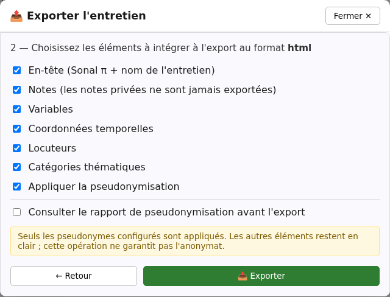
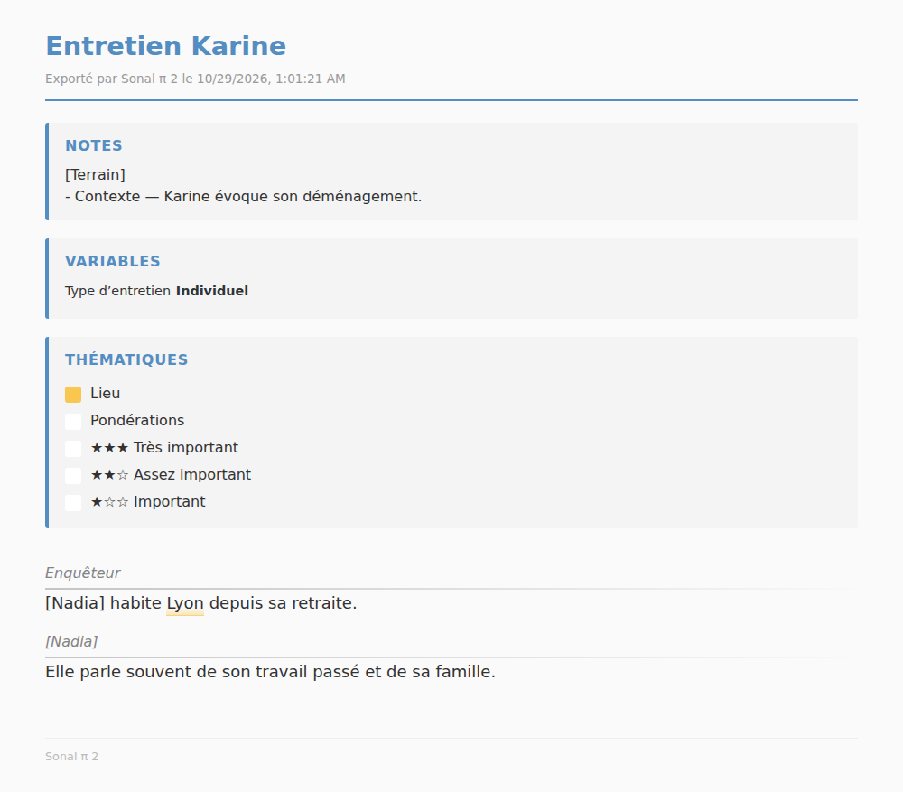

Organiser et exporter
Exporter un entretien
Un export crée une copie destinée à la lecture, à la diffusion ou à un autre logiciel. Vous choisissez le format et les éléments à inclure. L’entretien source reste inchangé.
Un export n’est pas une sauvegarde du corpus. Pour conserver les fichiers natifs et pouvoir restaurer tout le projet, utilisez la copie ZIP d’un corpus local.
Créer un export
- Ouvrez l’entretien à exporter.
- En haut à droite, cliquez sur Exporter cet entretien.
- Choisissez un format.
- Cochez seulement les éléments utiles dans le fichier final.
- Vérifiez l’option Appliquer la pseudonymisation.
- Cliquez sur Exporter, choisissez le dossier et confirmez le nom du fichier.
- Ouvrez le fichier produit et contrôlez son contenu avant de le transmettre.
La fenêtre repart du choix du format à chaque ouverture. Les options proposées et leur état initial changent selon le format : ne supposez pas qu’un choix précédent a été conservé.
L’export photographie l’état actuellement affiché, y compris une correction très récente. Il ne déclenche pas une sauvegarde du corpus et ne publie rien sur un serveur. Le bouton reste proposé lorsque l’entretien est en lecture seule.
Choisir le format adapté
| Format | Usage conseillé | Limite importante |
|---|---|---|
| .sonal | Échanger un entretien avec SonalPi, notamment avec la V1, en conservant transcription, locuteurs, codages, commentaires et données compatibles. | Ce n’est pas une copie complète du corpus V2. Les notes structurées de la V2 ne sont pas incluses, pas plus que les autres entretiens et l’organisation générale du corpus. |
| TXT | Relire, rechercher ou reprendre un texte dans presque tous les logiciels. | La présentation est simple ; les thèmes deviennent des libellés entre crochets. |
| SRT | Utiliser la transcription comme sous-titres dans un lecteur ou un logiciel vidéo. | Seuls les passages possédant un début et une fin temporels valides sont exportés. |
| VTT | Produire des sous-titres WebVTT, avec notes ou indications de thèmes si nécessaire. | Comme en SRT, les passages sans bornes temporelles sont absents. |
| HTML | Obtenir une page mise en forme, lisible dans un navigateur, avec locuteurs, notes, variables et thèmes choisis. | Le média local n’est pas incorporé : la page ne fait que le référencer. |
| DOCX | Corriger la présentation ou ajouter du contenu dans un traitement de texte. | Les commentaires de passage SonalPi ne deviennent pas des commentaires Word. |
| Fournir une version stable à lire ou à imprimer. | Le texte est moins facile à reprendre et aucun média n’est joint. |
La pseudonymisation est actuellement cochée par défaut pour TXT, HTML et DOCX, mais pas pour SONAL, SRT, VTT et PDF. Vérifiez toujours la case au lieu de vous fier à cette valeur initiale.
Comprendre les options

- En-tête ajoute le titre de l’entretien et la date de création de l’export.
- Notes ajoute seulement les notes publiques, lorsque le format les accepte.
- Variables ajoute les variables non privées et leurs valeurs.
- Coordonnées temporelles ajoute les temps disponibles. Elles sont indispensables aux sous-titres.
- Locuteurs ajoute leur nom ou leur pseudonyme devant les prises de parole.
- Catégories thématiques rend les codages sous forme de libellés ou de mise en forme selon le format.
- Appliquer la pseudonymisation remplace les occurrences décidées et les noms de locuteurs disposant d’un pseudonyme utilisable.
Une case absente signifie que l’élément n’a pas de représentation dans ce format. Par exemple, SRT ne propose ni notes, ni variables, ni thèmes.
Savoir ce qui sort réellement
| Élément | Comportement |
|---|---|
| Notes | Seules les notes publiques sont ajoutées aux formats de lecture qui proposent cette option. Leur titre et leur texte libre ne sont pas réécrits par la pseudonymisation. |
| Variables | Les formats de lecture excluent les variables privées. Le fichier SONAL complet peut conserver les variables privées ; sa version pseudonymisée les retire. |
| Commentaires de passage | Ils sont conservés dans SONAL. Le fichier HTML les conserve aussi dans son contenu technique, sans les afficher dans la page. TXT, SRT, VTT, DOCX et PDF ne les reprennent pas. |
| Thèmes | SONAL conserve les codages. Selon les options, TXT, DOCX et PDF ajoutent leurs noms ; HTML les met en forme et ajoute une légende ; VTT peut porter des indications destinées aux lecteurs compatibles. |
| Média | Aucun format n’incorpore automatiquement l’enregistrement. Le HTML non pseudonymisé peut faire référence au fichier local existant. |
Le statut privé n’est pas un chiffrement. Il écarte les notes et variables concernées des formats de lecture prévus, mais un fichier d’échange complet ou un autre parcours d’export peut avoir une portée différente.
Exporter des sous-titres
SRT et VTT sont construits à partir des repères temporels de la transcription. Un passage n’est exporté que si SonalPi connaît un début et une fin valides. Une transcription sans repères peut donc produire un fichier vide ; des repères partiels produisent seulement une partie du texte.
Le SRT peut préfixer chaque sous-titre par le locuteur. Le VTT peut aussi inclure les notes publiques et des indications de thèmes. Relisez le fichier dans le lecteur ou le logiciel auquel il est destiné : les styles WebVTT ne sont pas tous rendus de la même manière.
Utiliser la page HTML
Le HTML rassemble la mise en forme dans un seul fichier et se lit dans un navigateur sans connexion. Si un enregistrement local est associé à l’entretien et que la pseudonymisation est désactivée, la page peut afficher un lecteur et des boutons de lecture.
Le son n’est toutefois pas copié dans le HTML. La page pointe vers son emplacement actuel sur l’ordinateur. Elle peut donc perdre son lecteur après un déplacement ou sur un autre poste. Pour transmettre la page, transmettez le média séparément et contrôlez les conséquences sur la confidentialité.

Les commentaires ne sont pas visibles dans la page, mais leur texte et leur auteur restent présents dans le fichier HTML. Une personne qui examine le fichier peut les retrouver.
Appliquer la pseudonymisation
Lorsque la case est activée, SonalPi remplace les occurrences décidées par leur pseudonyme entre crochets. Les exceptions restent en clair. Un locuteur utilise son pseudonyme s’il en possède un ; sinon son nom réel peut rester visible.
Cochez Consulter le rapport de pseudonymisation avant l’export pour obtenir un contrôle en trois parties :
- les remplacements appliqués ;
- les éléments volontairement conservés, notamment les exceptions et les noms sans pseudonyme ;
- les champs libres à vérifier manuellement.
Vous pouvez enregistrer ce rapport séparément, puis lancer l’export. Si vous revenez aux options et les modifiez, SonalPi prépare un nouveau rapport.
La pseudonymisation ne réécrit pas automatiquement le titre, les notes, les commentaires, les noms de catégories, les libellés de variables ni leurs modalités. Elle ne transforme pas non plus la voix enregistrée.
Vérifier avant de transmettre
- Ouvrez le fichier dans le logiciel qui servira à le lire.
- Recherchez les noms, lieux, coordonnées et autres éléments identifiants attendus.
- Contrôlez le titre du fichier, son en-tête, les notes, les variables et les noms de locuteurs.
- Pour HTML et SONAL, considérez aussi les informations non visibles immédiatement, notamment les commentaires.
- Pour SRT et VTT, comparez le début et la fin avec la transcription afin de repérer les passages sans coordonnées.
- Conservez l’original dans le corpus et partagez seulement la copie vérifiée.
Annuler le dialogue de destination ne crée aucun fichier. En cas d’erreur, corrigez l’entretien ou les options puis relancez l’export ; le fichier déjà créé ne se met pas à jour automatiquement.